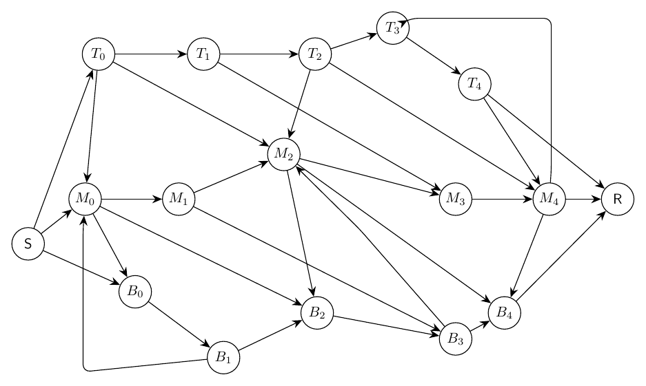
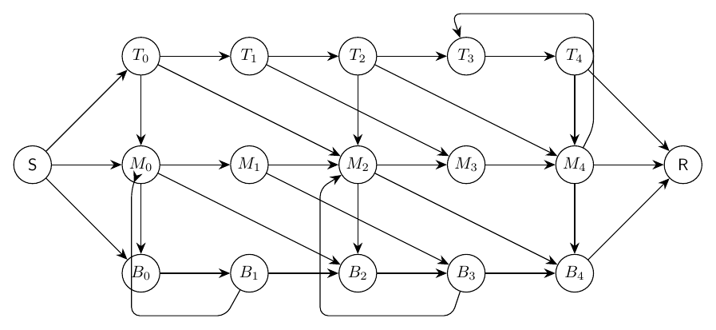

This report compares the full iterative workflow against a single-prompt LLM baseline.
| Case | Workflow Score | Single Score | Delta | Workflow Success | Single Success | Workflow Iters | Workflow Area/Node | Single Area/Node |
|---|---|---|---|---|---|---|---|---|
| Layered Bus Crossbar | 5.00 | 5.50 | -0.50 | False | False | 4 | 6.91 | 3.73 |
Prompt: Draw a directed artificial crossbar graph with three horizontal buses. The top bus has nodes T0,T1,T2,T3,T4, the middle bus has M0,M1,M2,M3,M4, and the bottom bus has B0,B1,B2,B3,B4. Add directed bus edges Ti->T(i+1), Mi->M(i+1), and Bi->B(i+1) for i=0..3. Add vertical relay edges T0->M0->B0, T2->M2->B2, and T4->M4->B4. Add crisscross transfer edges T0->M2, T1->M3, T2->M4, M0->B2, M1->B3, M2->B4, plus feedback edges B1->M0, B3->M2, and M4->T3 routed outside the buses. Add source S connected to T0,M0,B0 and sink R reached from T4,M4,B4. Keep the buses aligned and compact while routing transfers clearly.
score: 5.00; success: False; area/node: 6.91

score: 5.50; success: False; area/node: 3.73
